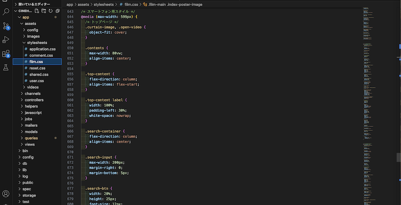

シネホリック（映画検索アプリ）
開発環境
Ruby / Ruby on Rails / HTML / CSS / JavaScript / MySQL / GitHub / Visual Studio Code / AWS / Premiere Pro
-
概要
制作時間 220時間 URL http://18.178.57.99 ID admin PASS 4545 -
動作テスト
テスト用アカウント
mail taro@taro PASS taro111 mail hana@hana PASS hana111
OUTLINEアプリケーションの概要
オリジナルアプリケーションとして、映画を検索するアプリを企画・開発しました。
主な機能は、映画検索機能、ユーザー登録、レビュー投稿とお気に入り機能です。
トップページ最初にアクセスすると、緞帳が開くアニメーションの後に
ナビバーと検索フォームが表示されます。
作品名、キャスト名だけでなく、スタッフ名からも検索できます。
検索だけでなく全ての作品一覧も見ることができます。
基本的にはユーザ登録なしで検索できますが、ユーザー登録をすると、レビューの投稿や、
お気に入りに追加することができ、マイページで管理できます。
検索は漢字ひらがなカタカナローマ字に対応しており
特に、ひらがなカタカナローマ字は区別なく検索可能です。
また、作品詳細ページには公式サイトへのリンクもあり、さらに詳しく知ることが出来ます。
-
過去に映画スタッフとして働いていた頃、次に一緒に仕事をする先輩スタッフの過去に携わった作品を見て勉強しようと思った際、 探す手段がとても少なく、困っていました。
離職後も、今彼らがどんな作品を作っているのか知る術がないという状況がありました。平日午前の単館映画館などで映画好きの観客が、映画祭などで受賞したスタッフの名前を出しながら、他の作品も見たいけれどわからないといった声を聞くことが何度かありました。
そこで、スタッフの情報が多く、さらに名前で検索できるようなアプリを開発する意義を感じ、作成することにしました。
-
開発で工夫したこと
情報の選別と検索方法については、
検索アプリと謳っているため、特に試行錯誤しました。
DB設計から検索ワードをどこまで複雑にするか分析し、
本アプリへの導入範囲の策定や、設計に時間を多く使いました。
映画検索だけでなく他の検索機能を持つアプリなども参考にしました。また、UX/UIの部分では、「デザイン性を保つ」「使いやすいこと」「わかりやすいこと」にこだわりました。
緞帳のアニメーションは、トップページへ戻るたびに動くとストレスになると考え、キャッシュで管理し最初だけ動かすようにしました。
検索から表示までの待ち時間を軽減するためスクレイピングから検索までのルートを考えたり、クエリオブジェクトや部分テンプレートを導入するとともに
対象ユーザーを考えデザインも作り込んでいきました。 -
今後実装したいと思っていること
現在、レスポンシブデザインの実装を進めております。
知人10数名に実際に使ってもらいそこから得たフィードバックを参考に、アプリの本軸と照らし合わせ、更なるブラッシュアップをしようと思っております。
星評価や、bluerayや劇中曲の購入をクリック一つでAmazonサイトなどでできるようにすることも、当初からの追加実装として考えております。また、本アプリでの実装は考えておりませんが、作成中に調べる中で、機械学習やPythonなどの多言語にも興味が出てきたので、今後勉強したいと思っております。